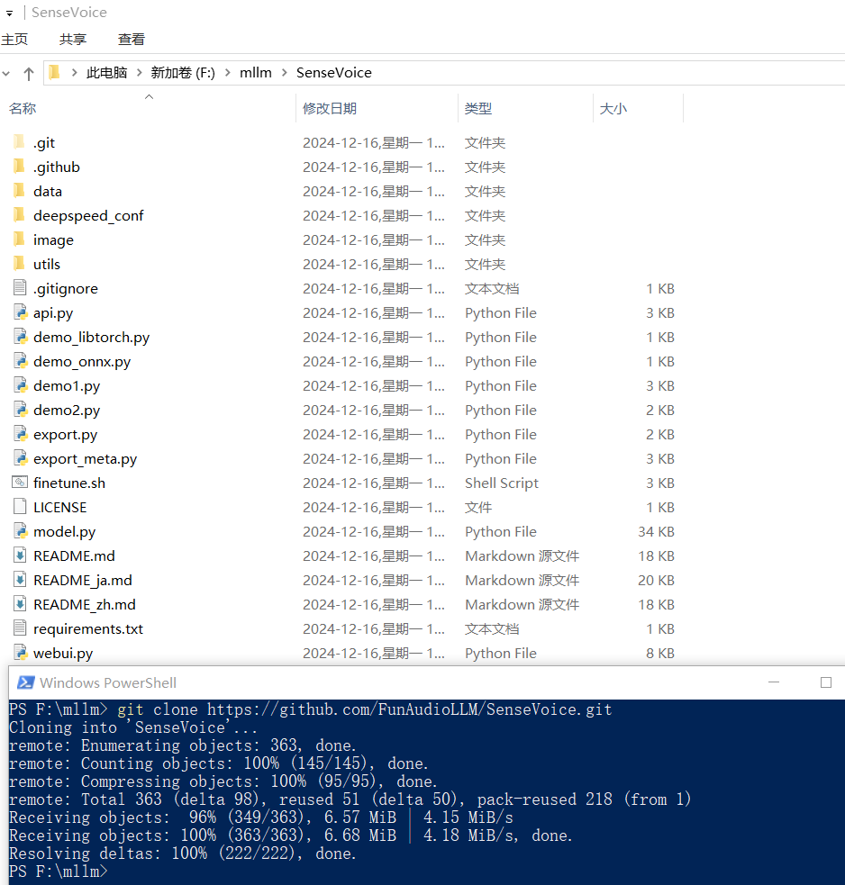

SenseVoice
GitHub：FunAudioLLM/SenseVoice: Multilingual Voice Understanding Model
官方介绍：SenseVoice 是具有音频理解能力的音频基础模型，包括语音识别（ASR）、语种识别（LID）、语音情感识别（SER）和声学事件分类（AEC）或声学事件检测（AED）。本项目提供 SenseVoice 模型的介绍以及在多个任务测试集上的 benchmark，以及体验模型所需的环境安装的与推理方式。
windows
这是和
模型下载
代码中用到了
这里的模型是
克隆项目

虚拟环境/安装依赖
# 创建虚拟环境
python -m venv venv
# 激活虚拟环境
.\venv\scripts\activate
# 退出虚拟环境
deactivate
# 安装依赖（添加到这里，使用的时候方便一些）
pip install -r requirements.txt
启动 webui.py
启动之前先修改一下代码，修改模型的路径，具体代码如下：
model_folder = "E:/llm/"
model = AutoModel(model=model_folder + "iic/SenseVoiceSmall",
vad_model=model_folder + "iic/speech_fsmn_vad_zh-cn-16k-common-pytorch",
vad_kwargs={"max_single_segment_time": 30000},
trust_remote_code=True,
)
然后启动
你需要执行
客户端调用
启动 webui.py 之后，还可以使用
import { Client } from "@gradio/client";
const response_0 = await fetch("http://localhost:8888/dmeo.wav");
const exampleAudio = await response_0.blob();
const client = await Client.connect("http://localhost:7860/");
const result = await client.predict("/model_inference", {
input_wav: exampleAudio,
language: "auto"
});
console.log(result.data);

启动 api.py
还是这个项目贴心啊，他还提供了纯API服务，基于
注意：因为咱没有算力，所以这里
下面是运行成功的截图：

javascript 调用
都有
在测试之前，服务器端（ api.py ）还需要添加一下允许跨域的支持，如下：
# 部分代码
from fastapi.middleware.cors import CORSMiddleware
app = FastAPI()
app.add_middleware(
CORSMiddleware,
allow_origins=["*"],
allow_credentials=True,
allow_methods=["*"],
allow_headers=["*"],
)
下面是
# html 代码
<p><input type="file" id="file" placeholder="请选择文件" accept="audio/*" /> <button type="button" id="btn">确定</button></p>
# javascript 代码
document.getElementById("btn").addEventListener("click", async () => {
const fileEle = document.getElementById("file");
const arrFiles = Array.from(fileEle.files);
const keys = Array.from(arrFiles)
.map((file) => file.name)
.join(",");
const formData = new FormData();
Array.from(arrFiles).forEach((file, index) => {
formData.append(`files`, file);
});
formData.append("keys", keys);
formData.append("lang", "auto");
fetch("http://localhost:7860/api/v1/asr", {
method: "POST",
headers: {
Accept: "application/json"
},
body: formData
})
.then((response) => response.json())
.then((data) => console.log(data))
.catch((error) => {
console.error("Error:", error);
});
});